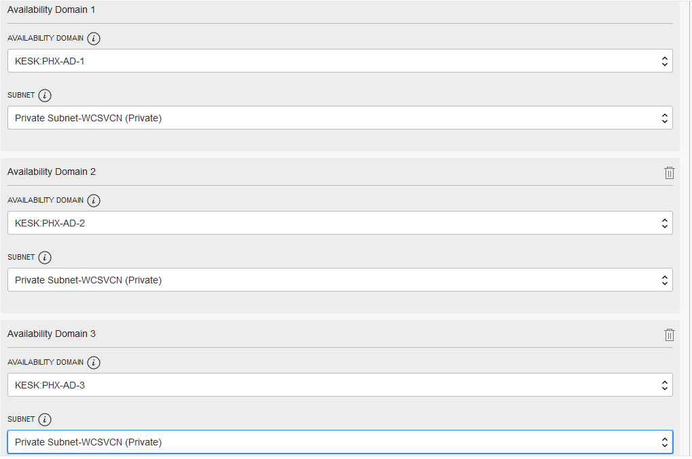
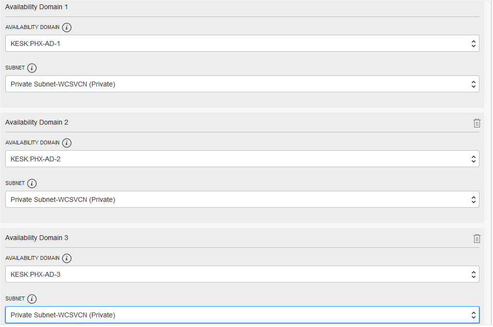

Preparing an OKE environment
Overview

Create Public SSH Key to access all the Bastion/Worker nodes
- Create SSH key using ssh-keygen on linux terminal.
Generating public/private rsa key pair.
Your identification has been saved in <path>/id_rsa.
Your public key has been saved in <path>/id_rsa.pub.
The key fingerprint is:
SHA256:xCi1gf1QFafbRwOM3WjUTgqEInwi6UklbuxbBeMzA6M demokey
The key's randomart image is:
+---[RSA 2048]----+
| +++oo..++*++ |
| ++==+==. oo=.+ |
|Eo+o*+++o .o +o |
| oo * .. o.... |
| . . S . . . |
| o . |
| . |
| |
| |
+----[SHA256]-----+
- This will generate id_rsa and id_rsa.pub in
- You will be using id_rsa.pub while creating the instance and id_rsa which is a private key, will be used during login to the instance later.
Create a compartment for OKE
Within your tenancy, there must be a compartment to contain the necessary network resources (VCN, subnets, internet gateway, route table, security lists).
- Go to OCI console, and use the top-left Menu to select the Identity > Compartments option.
- Click the Create Compartment button.
- Enter the compartment name(WCSCDev) and description(OKE compartment), the click the Create Compartment button.

Create Virtual Cloud Network
- From OCI console, use navigation menu. Under Solutions, Platform and Edge, go to Networking and click Virtual Cloud Networks (VCN)
- Choose a WCSCDev Compartment and then click Create Virtual Cloud Network
- Choose a WCSCDev Compartment and then click Networking QuickStart ? VCN with Internet Connectivity ? Start Workflow

- Add Name (ex. WCNVCN)

- Click Next ? Review and Create.
Create Container Clusters (OKE)
- From OCI console, use navigation menu. Under Solutions, Platform and Edge, go to Developer Services and click Container Clusters (OKE)
- Choose a WCSCDev Compartment and then click Create Cluster
 *In the Cluster Creation dialog, change the placeholder value in the Name field and enter WCSOKECluster instead.
*In the Cluster Creation dialog, change the placeholder value in the Name field and enter WCSOKECluster instead.


 


- Initially, the Cluster is in “Creating” state and no buttons are accessible. Once its state is “Active”, then all the button gets are enabled.

Create Bastion Node
Setup a bastion node for accessing internal resources.
Setup OCI CLI to download kubeconfig and access OKE Cluster
- Login to Bastion Node
- Install OCI CLI
$ bash -c "$(curl -L https://raw.githubusercontent.com/oracle/oci-cli/master/scripts/install/install.sh)"
- Respond to the Installation Script Prompts.
- To download the kubeconfig later after setup, we need to setup the oci config file. Follow the below command and enter the details when prompted.
$ oci setup config
This command provides a walkthrough of creating a valid CLI config file.
The following links explain where to find the information required by this
script:
User OCID and Tenancy OCID:
https://docs.cloud.oracle.com/Content/API/Concepts/apisigningkey.htm#Other
Region:
https://docs.cloud.oracle.com/Content/General/Concepts/regions.htm
General config documentation:
https://docs.cloud.oracle.com/Content/API/Concepts/sdkconfig.htm
Enter a location for your config [/home/opc/.oci/config]:
Enter a user OCID: ocid1.user.xxxxx5n3a
Enter a tenancy OCID: ocid1.tenancy.xxxxxxmffq
Enter a region (e.g. ap-mumbai-1, ap-seoul-1, ap-sydney-1, ap-tokyo-1, ca-toronto-1, eu-frankfurt-1, eu-zurich-1, sa-saopaulo-1, uk-london-1, us-ashburn-1, us-gov-ashburn-1, us-gov-chicago-1, us-gov-phoenix-1, us-langley-1, us-luke-1, us-phoenix-1): us-phoenix-1
Do you want to generate a new RSA key pair? (If you decline you will be asked to supply the path to an existing key.) [Y/n]: Y
Enter a directory for your keys to be created [/home/opc/.oci]:
Enter a name for your key [oci_api_key]:
Public key written to: /home/opc/.oci/oci_api_key_public.pem
Enter a passphrase for your private key (empty for no passphrase):
Private key written to: /home/opc/.oci/oci_api_key.pem
Fingerprint: 30:b9:a6:80:6e:b7:bb:7d:f9:79:6b:84:48:30:03:16
Config written to /home/opc/.oci/config
If you haven't already uploaded your public key through the console,
follow the instructions on the page linked below in the section 'How to
upload the public key':
https://docs.cloud.oracle.com/Content/API/Concepts/apisigningkey.htm#How2
- Now you need to upload the created public key in $HOME/.oci (oci_api_key_public.pem) to OCI console.
Login to Console and navigate to User Settings, which is in the drop down under your OCI username in the top nav
 On User Details page, select “Api Keys” in the left nav and then Click the “Add Public Key” button and then copy the content of “oci_api_key_public.pem”. Click “Add”.
On User Details page, select “Api Keys” in the left nav and then Click the “Add Public Key” button and then copy the content of “oci_api_key_public.pem”. Click “Add”.
 Now you can use the oci cli to access the OCI resources.
Now you can use the oci cli to access the OCI resources.
Setup Access Kubeconfig (OKE Cluster)
Install docker
- Login to Bastion Node
- Login to instance and install the latest docker-engine and start docker service
#install docker-engine
sudo yum -y install docker-engine
#Enable and start docker service
sudo systemctl enable docker
sudo systemctl start docker
#Add opc to docker group
sudo /sbin/usermod -a -G docker opc
- Logout and log back into the host - to ensure user is added to group correctly
- Check your Docker Version.
$ docker version
Client: Docker Engine - Community
Version: 19.03.1-ol
API version: 1.40
Go version: go1.12.5
Git commit: ead9442
Built: Wed Sep 11 06:40:28 2019
OS/Arch: linux/amd64
Experimental: false
Server: Docker Engine - Community
Engine:
Version: 19.03.1-ol
API version: 1.40 (minimum version 1.12)
Go version: go1.12.5
Git commit: ead9442
Built: Wed Sep 11 06:38:43 2019
OS/Arch: linux/amd64
Experimental: false
Default Registry: docker.io
containerd:
Version: v1.2.0-rc.0-108-gc444666
GitCommit: c4446665cb9c30056f4998ed953e6d4ff22c7c39
runc:
Version: spec: 1.0.1-dev
GitCommit:
docker-init:
Version: 0.18.0
GitCommit: fec3683
- If your instances are on corporate network then Configuring Proxy Requirements (run as root)
### Create the drop-in file /etc/systemd/system/docker.service.d/http-proxy.conf that contains proxy details:
cat <<EOF > /etc/systemd/system/docker.service.d/http-proxy.conf
[Service]
Environment="HTTP_PROXY=http://<your-company-domain>:80"
Environment="HTTPS_PROXY=http://<your-company-domain>:80"
Environment="NO_PROXY=localhost,127.0.0.0/8,.<no-proxy-domain>,/var/run/docker.sock"
EOF
- Restart docker daemon to load latest changes
$ sudo systemctl daemon-reload
$ sudo systemctl restart docker
- Verify if the proxy is configured with docker
$ docker info|grep -i proxy
Install Kubernetes Packages
- Login to Bastion Node
- Add the external kubernetes repository (run as root)
cat <<EOF > /etc/yum.repos.d/kubernetes.repo
[kubernetes]
name=Kubernetes
baseurl=https://packages.cloud.google.com/yum/repos/kubernetes-el7-x86_64
enabled=1
gpgcheck=1
repo_gpgcheck=1
gpgkey=https://packages.cloud.google.com/yum/doc/yum-key.gpg https://packages.cloud.google.com/yum/doc/rpm-package-key.gpg
exclude=kube*
EOF
- Set SELinux in permissive mode (effectively disabling it)
export PATH=/sbin:$PATH
setenforce 0
sudo sed -i 's/^SELINUX=enforcing$/SELINUX=permissive/' /etc/selinux/config
- Export proxy (if your instances are on corporate network) and install latest kubeadm, kubelet and kubectl
VERSION=1.18.4-0
sudo yum install -y kubelet-$VERSION kubeadm-$VERSION kubectl-$VERSION --disableexcludes=kubernetes
### enable kubelet service so that it auto-restart on reboot
sudo systemctl enable --now kubelet
- Ensure net.bridge.bridge-nf-call-iptables is set to 1 in your sysctl to avoid traffic routing issues ( run as root user)
cat <<EOF > /etc/sysctl.d/k8s.conf
net.bridge.bridge-nf-call-ip6tables = 1
net.bridge.bridge-nf-call-iptables = 1
EOF
sysctl --system
- Update the kubelet with –fail-swap-on flag to false and restart kubelet (starting in 1.8, kubelet fails to start with swap enabled)
### run as a root user
### Update --fail-swap-on=false into /etc/sysconfig/kubelet
sed -i 's/KUBELET_EXTRA_ARGS=/KUBELET_EXTRA_ARGS="--fail-swap-on=false"/' /etc/sysconfig/kubelet
cat /etc/sysconfig/kubelet
### Reload and restart kubelet
systemctl daemon-reload
systemctl restart kubelet
Setup bastion Node to Access Kubeconfig
- From OCI console, use navigation menu. Under Solutions, Platform and Edge, go to Developer Services and click Container Clusters (OKE), click on ‘WCSOKECluster’

- Now click on “Access Cluster” then click on “Local Access”, gives details on how to download the kubeconfig to access the cluster.

$ oci -v
$ mkdir -p $HOME/.kube
$ oci ce cluster create-kubeconfig --cluster-id ocid1.cluster.oc1.phx.xxxxxx --file $HOME/.kube/config --region us-phoenix-1 --token-version 2.0.0
$ export KUBECONFIG=$HOME/.kube/config
- Once the kubeconfig is setup, you can access the Cluster with kubectl commands from any host or laptop.
$ kubectl get nodes
NAME STATUS ROLES AGE VERSION
10.0.10.2 Ready node 111m v1.18.4
10.0.10.3 Ready node 111m v1.18.4
10.0.10.4 Ready node 111m v1.18.4
Create Filesystem and security list for FSS
Setup Filesystem
Creation of OCIR
Setup the OCIR for managing Docker images.